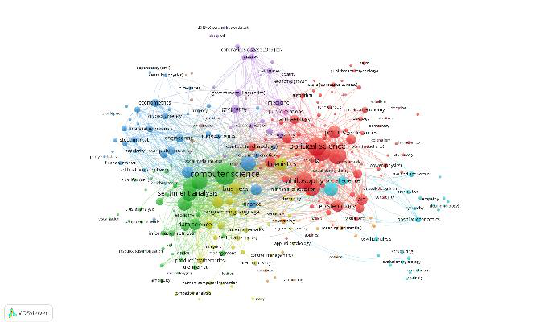
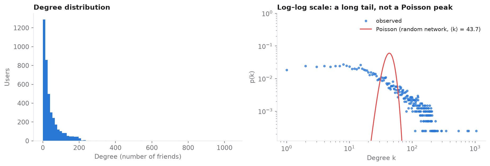

Why networks?
Text written by people has no structure of its own. Network tools are one way to find order in it: in how publications on a topic relate to each other, in how people connect, and in how their messages resemble each other. This study tested several such tools side by side before a larger sentiment analysis project.
1. Mapping the sentiment analysis literature
I pulled bibliographic data on 2024 publications from the OpenAlex API, mapped the terms that co-occur in abstracts with VOSviewer, and measured the network in Gephi.

Three fields form dense clusters. Psychology and social psychology provide the theoretical grounding. Political science takes part through elections and civic behaviour. Computer science contributes the methods, and NLP sits between them. The degree distribution is scale-free: a few highly connected publications and many weakly connected ones.
A practical lesson was that the search term matters. Searching for social sentiment returned mostly COVID-19 papers, which made sentiment analysis the more relevant query.
2. Hubs and scale-free structure in a Facebook network
The SNAP ego-Facebook network contains 4,039 anonymised users and 88,234 friendships. The average user has 44 friends, and any two users are on average only 3.7 steps apart.

Is the network random or scale-free? The answer is in the tail of the degree distribution. A random network with the same average degree would produce a narrow Poisson peak. This network instead has a long, heavy tail: most users have few friends, and a few hubs have hundreds.

This confirms that the network follows a power-law degree distribution and is not randomly organised, as Barabási (2016) describes for real social networks.
3. A similarity network of social media messages
I processed a public set of political tweets with spaCy, measured the similarity between them with TF-IDF, and connected similar messages with NetworkX using a force-directed layout.
Similar tweets formed small topical clusters, for example on workplace harassment, housing policy, immigration and agriculture. Combining NLP with network methods made the topical structure of the corpus visible. This is a useful step before sentiment analysis.
A negative result worth keeping. The same TF-IDF approach on a small pilot survey of 207 students' open-ended answers gave no meaningful structure: the network of the 50 most frequent words was almost complete. That finding shaped the design of later, larger studies. The raw survey data are not published.
Conclusions
Network tools give a fast, bird's-eye view of a research field and help focus the literature search. The Facebook network is scale-free and dominated by a few hubs, the hallmark of non-random social networks. Text similarity networks reveal topical clusters in social media. The study also showed which tools work for which task: Python (NetworkX, spaCy), Gephi and VOSviewer.